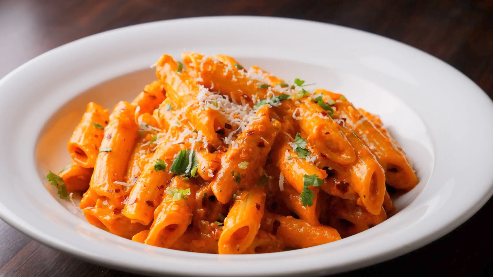

Pasta
Back Home

Description
Making a creamy tomato pasta sauce from scratch with canned tomatoes is simple! The best part is that it can be ready by the time your pasta has cooked. It’s perfect for those on-the-go weeknights.
This sauce uses a can of tomato sauce for liquid, and I also add in some tomato paste to punch up that tomato flavor. Garlic, Italian seasoning, butter, and cream complete it. Add some freshly grated parmesan cheese to take it over the top!
Ingredients
- Pasta
- Butter
- Garlic
- Tomato Paste
- Tomato Sauce
- Heavy Cream
- Italian Seasoning
Steps
- Cook the pasta until al dente
- Meanwhile, melt the butter in a skillet
- Sauté the garlic for a minute
- Stir in the tomato paste, tomato sauce, cream, and Italian seasoning until smooth
- Let the sauce gently bubble until thickened to your liking. Season generously with salt & pepper. Add a pinch of sugar if desired
- Toss with the drained pasta
- Top with parmesan cheese if using
Back Home